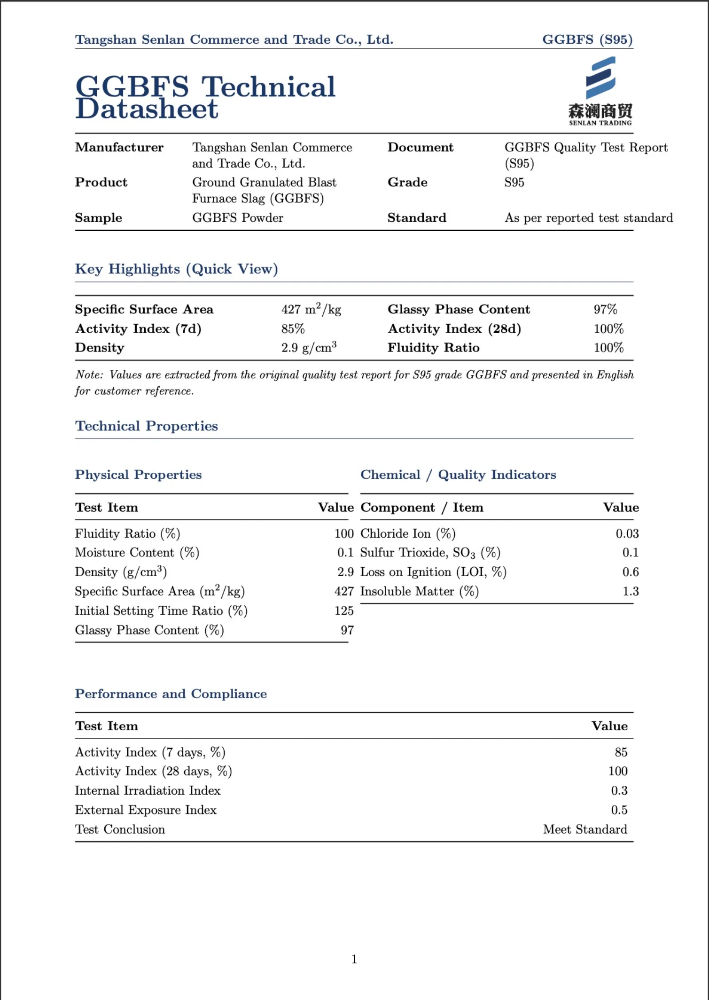
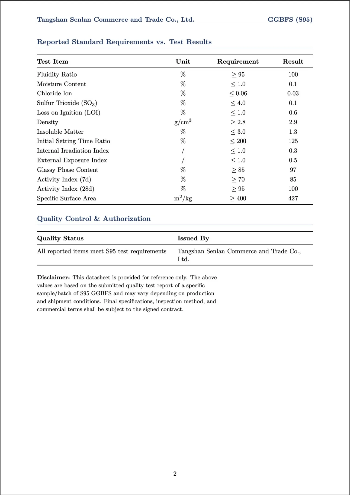

Built for durability and long-term performance.
Ground Granulated Blast Furnace Slag (GGBFS) is a hydraulic cementitious material made by drying and finely grinding granulated blast furnace slag. It has been used in concrete structures for over a century and is recognized for improving durability, performance consistency, and life-cycle cost efficiency in modern concrete design.
By partially replacing Portland cement, slag powder can improve concrete performance while reducing long-term maintenance needs.
Key Application Value
Construction materials and diversified industrial applications:
- Improved workability and easier placement
- Higher long-term compressive and flexural strength
- Lower permeability and enhanced durability
- Improved resistance to chemical attack
- Reduced heat of hydration and cracking risk
- More stable plastic and hardened concrete behavior
- Lighter concrete color and improved surface appearance
Secured Factory-Direct GBFS Supply
We maintain long-term contractual partnerships with multiple blast furnace slag producers in Tangshan, enabling us to source GBFS directly from the factory. This stable upstream integration ensures consistent product quality, reliable supply volumes, and full traceability from production to delivery. By working closely with our partner factories, we are able to respond efficiently to market demand while maintaining strict quality and logistics control for both domestic and international customers.
Tangshan Donghua Iron & Steel Enterprise Group Co., Ltd.
Tangshan Ruifeng Iron & Steel (Group) Co., Ltd.
Technical Datasheet


Datasheet values are for reference and may vary by batch and shipment conditions. Final acceptance is subject to contract.